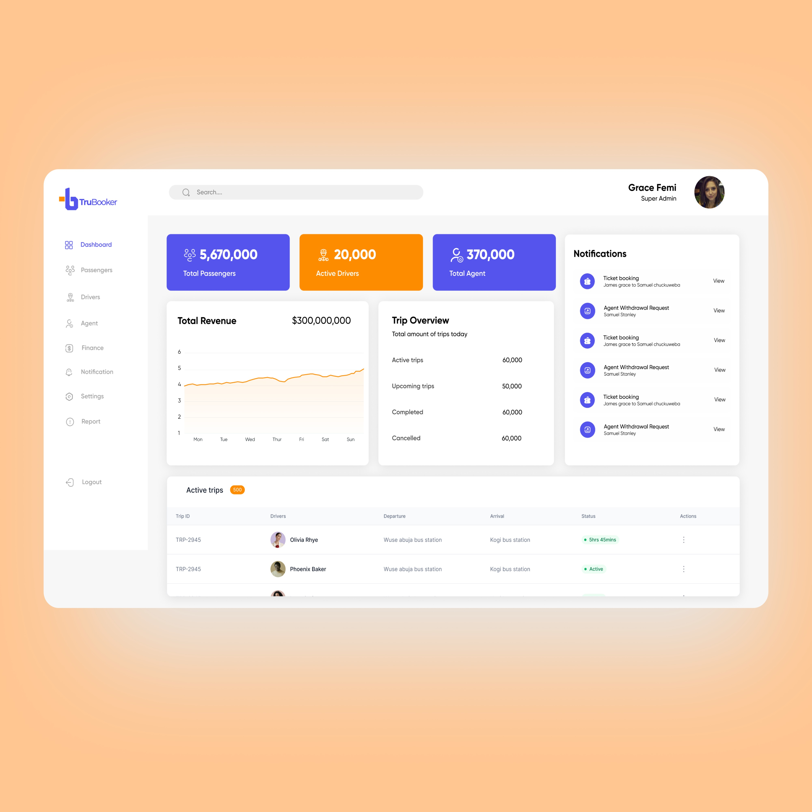
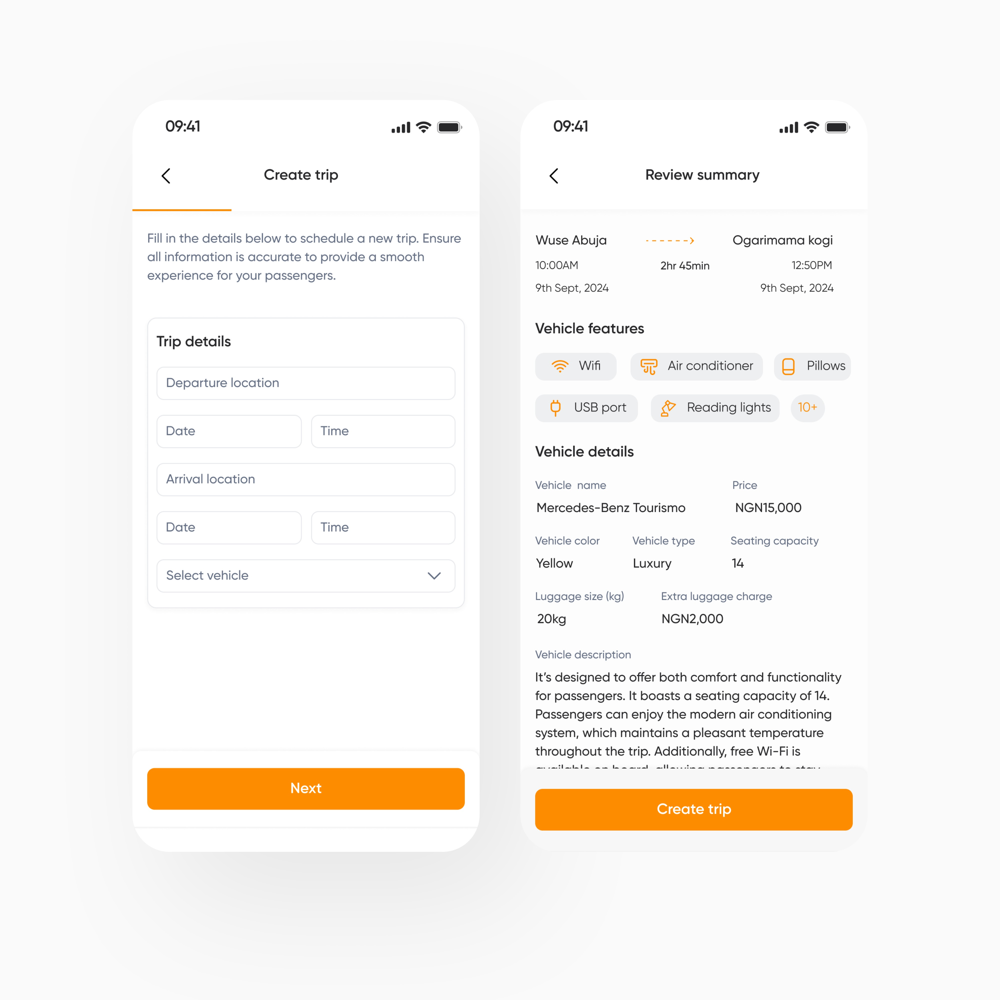
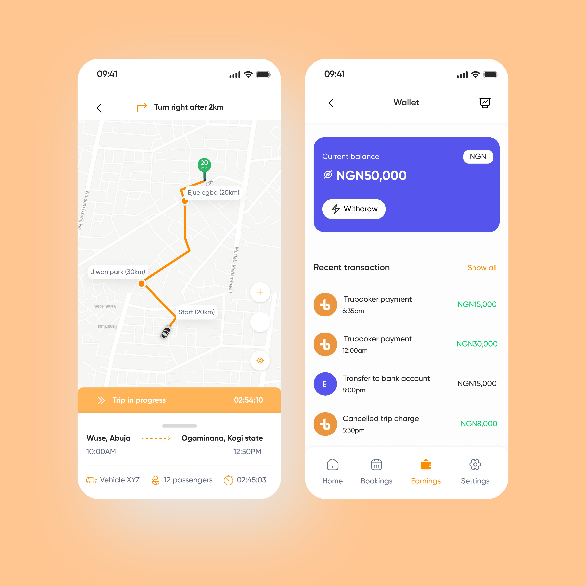
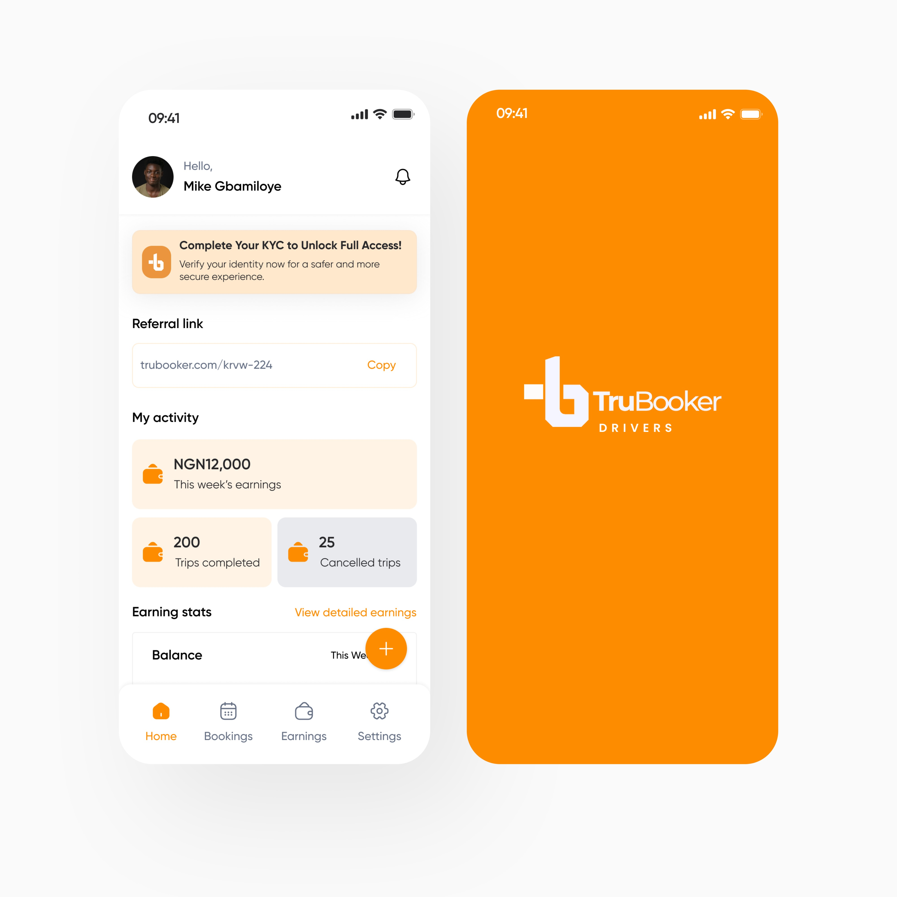
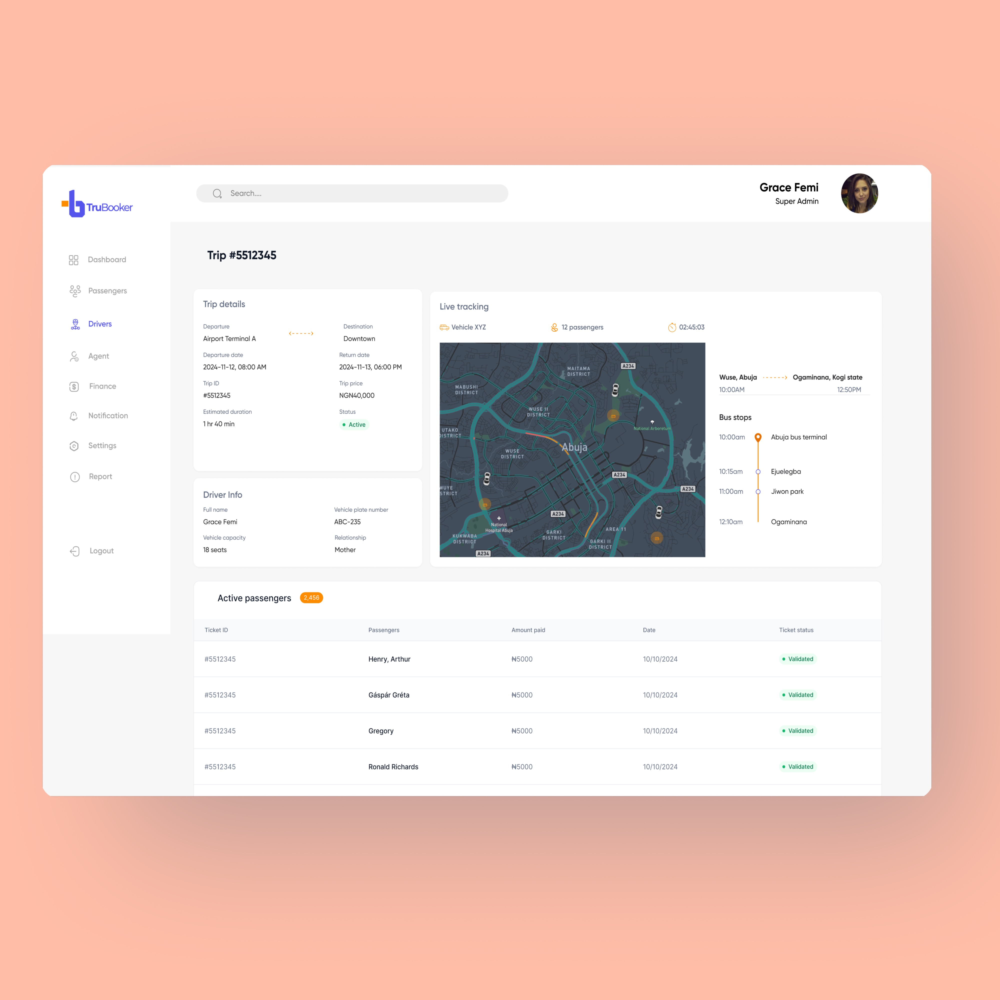

TruBooker
I designed connected experiences for passengers booking bus travel, drivers running trips, and connectors onboarding drivers. Each group needed a clear path through the same service.

THE BRIEF
TruBooker set out to make bus travel easier to find and book. My work covered the passenger app, driver app, connector experience, and a marketing landing page. The screens also include a platform dashboard for viewing trips and activity across the service.
DIFFERENT PEOPLE, DIFFERENT TASKS
The difficult part was giving each person the right information at the right moment. Passengers needed to search routes, compare options, and book without losing track of the trip details. Drivers needed to create trips, manage passengers, follow a live journey, and see their earnings. Connectors needed to bring drivers onto the platform and keep track of referrals and commissions.
THE DESIGN RESPONSE
I treated those as separate journeys within one platform. The passenger flow starts with a route, date, and number of seats. The driver flow brings trip setup and review together before a trip begins, then makes progress and wallet activity easy to find. The connector view puts the referral link and activity in one place. The dashboard brings trip status and related records into a wider operational view.
ONE VISUAL LANGUAGE
Across the screens, I used clean white surfaces with blue and orange accents so the passenger, driver, connector, and dashboard experiences still felt like TruBooker. The layout changes with each person’s job, while the visual cues stay familiar.
The interface designs
What that became.
These screens show how the booking, driving, referral, and operations journeys take shape.




